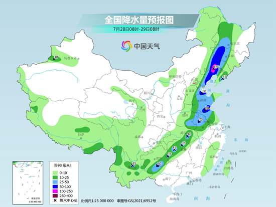

中国天气网讯 今明天（7月28日至29日）北方较强降雨过程仍将持续，主要降雨区域将转移到东北、黄淮东部等地，山东、辽宁、吉林等地部分地区有暴雨。而在南方，未来10天还将有持续高温天气，其中今天，浙江、江西等地部分地区最高气温可达40℃及以上。
7月以来，北方地区已经接连出现了多次强降雨过程，华北、黄淮、东北地区中南部等地部分地区降雨量较常年同期偏多了5成以上，局地甚至偏多2倍。26日，新一轮降雨过程又来袭，昨天北京、河北、山西等地成为强降雨的主要落区，实况监测数据显示，27日08时至28日06时，河南、山东西部、山西中部、河北、北京南部和东部等地出现大到暴雨，河南洛阳和鹤壁、北京朝阳和通州等地大暴雨。
今天，随着高空槽继续东移，同时副热带高压有所北抬，引导暖湿气流北上输送，东北以及黄淮东部降雨明显增多。预计，内蒙古东南部、黑龙江西部、吉林中西部、辽宁、河北东南部、河南东部、山东大部、苏皖中北部、湖北东部、湖南北部、云南中北部等地部分地区有中到大雨，其中，内蒙古东南部、吉林中西部、辽宁中西部、山东北部和南部、江苏北部等地部分地区有暴雨，局地有大暴雨。

明天，一条狭长的雨带还将从贵州延伸至黑龙江。预计，黑龙江西部、吉林中西部、辽宁、山东中东部、江苏北部、安徽东部、广西西部等地部分地区有中到大雨，局地有暴雨。
气象部门提醒，吉林、辽宁、山西、河北、山东等地此次降雨将与前期多雨区叠加，致灾风险较高，需注意防范中小河流洪水、山洪等次生灾害。
编辑：梁杰